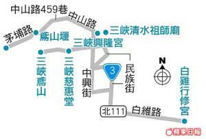
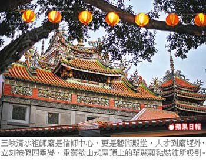
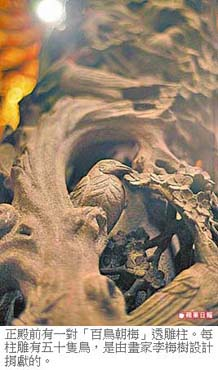
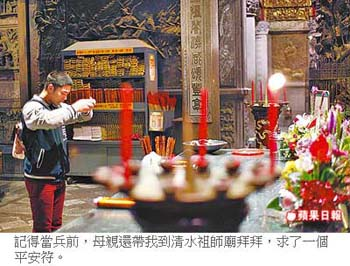

就是 渺妙廟 即使變得遲緩 一顆虔心依舊
渺，是人們卑微的小小願望，妙，在有知趣的車載著進香，廟，埕外虔心化作了寺內裊裊，而這裊裊上升的輕香，是一封封寄給上蒼的限時批，批內是一個心內話的聲音檔，不斷禱念著，眾神明啊 祢甘唔聽丟溫ㄟ祈求，請祢保庇溫厝內大大小小一切，健健康康 平平安安 順順利利。
陳宏銘、王文廷｜蘋果日報／去兜風∣2015年1月23日
每到農曆春節，也是各大廟宇進香拜拜、點燈安太歲的旺季，所以我們這次去兜風，重點不在往常的逗路情趣上，而是利用具有特殊功能的妙妙車，讓父母親打開心結、一同出遊。剛好，格上租車最近推出一系列福祉車出租，其中最吸引我們的是ToyotaSiennaxAAS，AAS為Auto Access Seat縮寫，意指自動通道座椅，我們就叫它電動升降座椅囉！改裝Sienna第2排右側座椅，把它變成可直接升降伸出車外的座椅，此舉大大改善了行動不是很俐落的長輩進出車輛時的方便度。
具信仰 有藝術 又好玩的廟
年節假期到各大寺廟走春，是長輩較喜愛的行程，於是我便規劃一趟所謂的「廟、廟、廟之旅」，有遊山玩水的廟、有兼具信仰藝術的廟、有逛起來好玩的廟，同時不能太過於舟車勞頓，不然三座廟距離一拉遠，光坐車就累死人，這我們可不幹。於是三峽就這樣雀屏中選，主要是由於每年的大年初六，剛好是清水祖師爺的誕辰，神豬廟會十分熱鬧，加上三峽清水祖師廟素來以石雕、木雕藝術聞名遐邇，又是許多祖籍來自福建之人的信仰中心，所以兼具信仰藝術的廟就是它了，父母親參拜、香煙繚繞之餘，還能欣賞鬼斧神工的雕刻。
清水祖師廟旁邊相鄰著三角湧老街，老街內有一座供俸媽祖的興隆宮，也是香火久遠的廟宇，逛起來好玩的廟自然落在興隆宮上。而原本拜關公的行修宮是我們計劃裡遊山玩水的廟，不過事與願違的是，一來記憶裡滿園的山茶花，竟然一朵都沒有，二來行修宮正在大肆整修門面。於是吃完豆干便做了改道的決定，而鳶山上清幽的慈惠堂就成了遊山玩水的廟。
滄桑卻蘊育著 美麗的風華
三峽是台灣北部的古鎮，而古鎮的滄海桑田，常常就是依著廟宇發展而來，在那個羅漢腳仔拓墾年代，寄託信仰會讓人不安的心神定下來，於是安溪家鄉的神祉祖師爺就這樣分靈來到了三峽。而1947年起第三次重修的祖師廟，在畫家李梅樹的主導下，匯聚當代雕刻名匠進行整建，經過了一甲子至今仍未完全竣工，但匠心獨具的廟宇已成了雕刻的藝術殿堂。虔誠禮拜了祖師爺後，我們走進老街興隆宮，便看見這座曾是義勇軍抗日的指揮總部，敵愾的氣息早煙消雲散，門外兩台像是抓娃娃的機器，竟是用來抽籤詩和換錢母的台子，一看到之後，還有模有樣的去求了個錢母，老街建築的時光迴廊我們沒有多作留戀，因深怕天黑，山上路不好走，旋即驅車開上鳶山山腹、主祀金母娘娘的慈惠堂，這裡很清幽，沒有老街的紛擾，卻有山群森林的芬多精，從廣場遠眺開闊的群山巒疊，心情也立刻開朗了起來。